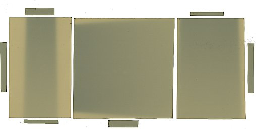

Dosimetría con películas radiocrómicas
Fundamentos sobre dosimetría fotográfica y control de calidad de distribuciones de dosis
Características de los sistemas basados en películas
- El material sensible está repartido uniformemente sobre una superficie
- Permiten la medida de la distribución espacial de la dosis
- La radiación modifica de manera permanente el material sensible
- La deposición de energía de la radiación en el material sensible se puede cuantificar mediante propiedades ópticas no destructivas: absorción o reflexión de luz
Radiocromicidad
Definición de la radiocromicidad
Propiedad por la que un material cambia de color directamente al absorber energía.
- Se ha intentado emplear desde el inicio de la fotografía
- Los plásticos cambian de color al ser irradiados
- Investigación continua hacia materiales de mayor sensibilidad
| Modelo | Rango [Gy] | Década |
|---|---|---|
| DM-1260 | 50 - 2500 | 1970 |
| MD-55-1 | 10 - 100 | 1980-90 |
| MD-55-2 | 3 - 100 | |
| EBT 1-2-3 | 0.5 - 20 | 2000 |
Estructura de la película radiocrómica
- La película presenta una disposición en capas
- Una o varias capas activas: contienen el material radiocrómico
- Una o varias capas inactivas: elementos adhesivos, protectores y funciones auxiliares. Introducen una atenuación que no varía con la dosis.
- El fabricante ha ido añadiendo elementos para minimizar el impacto de ciertos problemas identificados en el procesado de la señal de la película
- Aumento del grosor del elemento sensible: mayor sensibilidad
- Tinte amarillo: corrección de uniformidad
- Disposición simétrica: mayor independencia de la colocación en la digitalización
- Superficie rugosa: evitar la formación de anillos de Newton
Composición
- Están constituidas por elementos ligeros
- Composición similar a la del tejido biológico
- El material activo no irradiado se presenta como monómeros dispuestos en microcristales en forma de bastón (2 μm de diámetro y 15 μm de largo) con una dirección preferente.
Sistemas lectores
Digitalizador
Flatbed scanner
- Calidad fotográfica
- Preferiblemente de tamaño A3
- Digitalización en color
- Profundidad de color por canal \(2^{16}\)
- Posibilidad de digitalización en modo de reflexión o transmisión
Bases físicas
Respuesta a la absorción de la radiación
- La radiación induce una reacción de polimerización
- Los monómeros presentes en los microcristales se unen formando polímeros que pueden llegar a ocupar todo el cristal
- La configuración electrónica de los microcristales cambia y altera las propiedades ópticas de la capa activa
- El principio de medida se basa en que a mayor dosis absorbida, mayor formación de polímeros, mayor alteración de las propiedades ópticas
Absorbancia de la capa activa \(\mathcal{A}_a\)
\[ \mathcal{A}(\lambda)=\log_{10}\frac{I_0(\lambda)}{I(\lambda)} \]
- Absorción de la intensidad de la luz para cada longitud de onda. \(I_0\) intensidad incidente, \(I\) intensidad transmitida.
Relación entre la absorbancia y la dosis
La absorbancia, y por tanto la atenuación de la luz que atraviesa la película, se incrementa con la dosis.
Cuantificación de la absorción de luz
Para un escáner con una lámpara de intensidad \(I_0(\lambda)\), la cantidad de luz absorbida por la película se cuantifica mediante la señal digital producida por el escáner
\[ S = \left \lfloor 2^{n} \cdot \left(\frac{\int I_0(\lambda) 10^{-(\mathcal{A}_\text{Bkg}(\lambda)+\mathcal{A}_a(\lambda, D))}R(\lambda)d\lambda}{\int I_0(\lambda) R(\lambda)d\lambda}\right)^{\gamma} \right \rfloor \]
\(n\) número de bits, \(\gamma\) exponente de contraste, \(R\) respuesta espectral del filtro de color, \(\mathcal{A}_{\text{Bkg}}\) y \(\mathcal{A}_a\) absorbancia de las capas no activas y activas de la película.
Calibración del sistema
Definición y procedimientos de calibración
Establecer la relación biunívoca entre la lectura que produce el sistema y la dosis recibida
Muestras de dosis
Distribución espacial de dosis conocida
Procedimiento
- Irradiar muestras de películas a valores dosis controlados (películas al eje del haz) o una distribución espacial de dosis conocidas (película al eje del haz). El rango de dosis tiene que ser adecuado a la calibración
- Leer las muestras o la película con la distribución espacial conocida
- Establecer una curva que relacione dosis y lectura
Modelos sensitométricos
Modelo sensitométrico basado en dos absorbentes
Densidad óptica definida a partir de la señal digital
\[ d = \log_{10}\frac{S_{\text{Bkg}}}{S} \]
Densidad óptica en función de la dosis
\[ d(D) = \Phi_R \cdot (1 - e^{-k_{R} \cdot D}) + \Phi_B \cdot (1 - e^{-k_{B} \cdot D}) \]
Los parámetros \(k_{R}\) y \(k_{B}\) son característicos del material sensible y no dependen del lote de fabricación.
Otros modelos sensitométricos
| ID | Expresión Matemática | Referencia |
|---|---|---|
| Rational | \(d = - \log_{10}\frac{a+bD}{c+D}\) | Micke et al. |
| Polynomial | \(d = a + b\: D + c\: D^2 + + d\: D^3\) | Borca et al. |
| Linear power | \(D = a\: d + b\: d^c\) | Devic et al. |
| Exponential | \(d = a - b\:e^{-c\:D}\) | Poppinga et al. |
| Tamponi | \(\epsilon(R) = \frac{\log\left[1+(A_c-1)\:R\right]}{\log(A_c)}\) | Tamponi et al. |
| \(A_c = 1 + h_c \, D_r \text{, } R = \frac{D}{D_r}\text{, } \epsilon(R) = \frac{d(D)}{d(D_r)}\) | ||
| SHGD | \(d(D) = c\left(1-\frac{a^b}{(a+D)^b}\right)\) | del Moral et al. |
Diferentes modelos densidad óptica \(d\) vs dosis absorbida \(D\). SHGD (Single Hit Gamma Distributed) es un modelo basado en teoría de percolación.
Curvas de calibración
Distintos lotes de fabricación medidos mediante muestras de dosis
Misma película en distintos escáneres medida mediante distribuciones espaciales de dosis
Usos prácticos
Dosimetría de campos de radiación
Distribuciones de dosis en campos cuadrados
Validación como sistema de dosimetría
Verificación de distribuciones de dosis absorbida
Cálculo de la distribución de dosis en el paciente
Recálculo de la distribución de dosis en el maniquí
Ejemplo: Irradiación de radiocirugía cerebral
Movimientos de gantry y mesa
Ejemplo: Irradiación de radiocirugía cerebral
Movimientos del colimador multilámina
Recálculo de la distribución de dosis en el maniquí
Irradiación de las películas
Digitalización de las películas
Coronal 2.5 cm posterior al isocentro.
Coronal 4.5 cm posterior al isocentro.
Análisis: Tiras de control
Trozos de películas del mismo lote de fabricación irradiadas bajo condiciones controladas con una dosis conocida y procesadas a la vez que las del ensayo
Las tiras de control sirven como comprobación de la estabilidad del procesado y para tener una estimación de incertidumbres
Análisis: Señales digitales
Control del ruido
La señal digital producida por el escáner presenta ruido. Se emplean algoritmos como el análisis multicanal propuesto por Micke o el de promedios no locales.
Análisis: Distribución de dosis
Análisis: Distribución de diferencias de dosis
Dosis medida - Dosis planificada
Es muy sensible a pequeños desplazamientos en las regiones de alto gradiente de dosis
Análisis: mapa gamma
Para criterios de aceptación \(\delta D\) y \(\delta d\), el índice \(\gamma(\delta d, \delta D)\) es una métrica conjunta de la diferencia de dosis \(\Delta D(\mathbf{r}_e, \mathbf{r}_r)\) y la distancia \(d(\mathbf{r}_e, \mathbf{r}_r)\), con \(\mathbf{r}_e\), \(\mathbf{r}_r\) puntos del espacio de evaluación y de referencia respectivamente, definida como
\[ \gamma(\mathbf{r}_r,\delta d, \delta D) = \text{min}\{ \sqrt{\frac{d^2(\mathbf{r}_e, \mathbf{r}_r)}{\delta d^2}+\frac{\Delta D^2(\mathbf{r}_e, \mathbf{r}_r)}{\delta D^2}} \} \forall \mathbf{r}_e \]
Por ejemplo, un píxel con \(\gamma(3, 3) < 1\) indica que en un entorno de menos de 3 mm podemos encontrar otro píxel con una diferencia relativa de dosis menor al 3%.
Análisis: Comparación de perfiles de dosis
Sistemas comerciales de procesado: FilmQAPro
Sistemas comerciales de procesado: FilmQAPro
Sistemas comerciales de procesado: FilmQAPro
Aplicaciones web comerciales: radiochromic.com
Aplicaciones web de libre uso: FilmQAp
Aplicación en desarrollo construida mediante streamlit para realizar procesamiento de películas radiocrómicas mediante un protocolo de digitalización única.
Resumen
Dosimetría fotográfica
- Las películas radiocrómicas permiten medir con alta resolución distribuciones espaciales de dosis absorbida
- Por su composición son una alternativa a valorar en situaciones con falta de equilibrio electrónico
- Requieren elaborados procedimientos de manipulación y análisis
Control de calidad de distribuciones de dosis
- El índice gamma es una métrica que simultáneamente informa sobre diferencias relativas de dosis y distancia al acuerdo.

Dosimetría radiocrómica y control de distribuciones de dosis. Física de la radioterapia